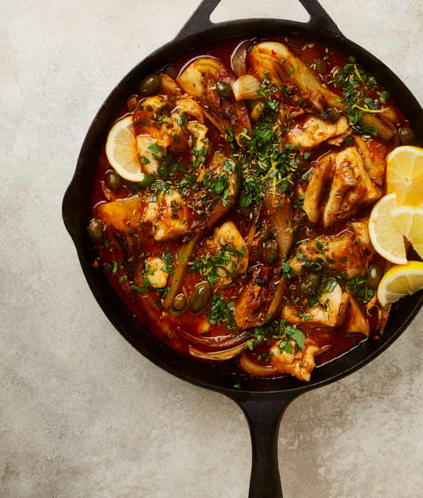

Braised cod with winter tomatoes, fennel and caperberries

Winter tomatoes such as black iberiko are well worth seeking out for this, but if you can’t find any, use the same amount of crushed tinned tomatoes instead. Swap the cod for any other firm white fish such as hake, or for other seafood such as mussels or prawns. Serve with the allium rice above or with lots of crusty bread.
Put the fennel and onion wedges in a large bowl with a tablespoon and a half of oil and toss gently to coat. Put a large saute pan for which you have a lid on a high heat. Once hot, lay in the fennel and onion wedges and brown on each cut side for three minutes; do this in two batches, if need be. Transfer the wedges to a plate and rinse out and dry the pan.
Return the pan to a medium heat with the remaining 80ml oil. Once hot, add the tomato paste and garlic, and cook, stirring occasionally, for two minutes, until fragrant. Add the fennel and onions, along with the grated (or tinned) tomatoes, stock, wine, chilli flakes, paprika, caperberries, a teaspoon of salt and a good grind of pepper, then cover the pan and bring to a gentle simmer. Once it’s bubbling, turn down the heat to medium-low and cook for 20 minutes, until the fennel and onion wedges have softened but still keep their shape.
Sprinkle the cod pieces all over with a quarter-teaspoon of salt, then gently push them into the sauce, so they’re submerged. Replace the lid and cook for another 10 to 12 minutes, until the fish is just cooked through. Use a spoon to coat the top of the cod with the sauce.
Meanwhile, mix the basil, parsley and lemon zest in a small bowl.
Sprinkle a third of the herb mixture and a third of the fennel seeds on top of the cooked cod, and serve warm with the remaining herb mixture, fennel seeds and lemon wedges alongside.